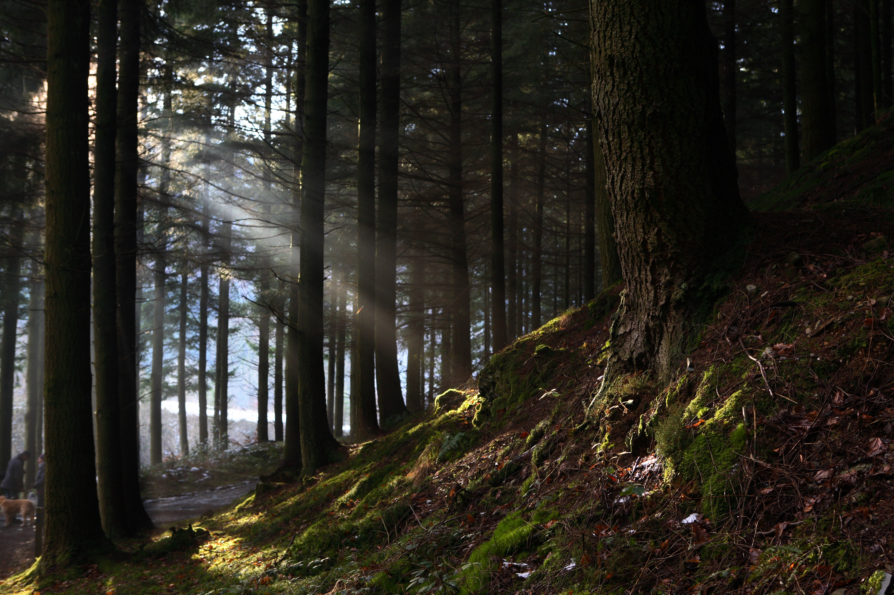

|  | Leave-- you get out quite easily and find yourself in a dense forest. You have no clue where you are, but there seems to be a fair amount of edible vegetation which may infer there are animals near by for hunting. Eat the vegetation or continue to adventure in hopes of finding animals? |
| Eat | Continue |